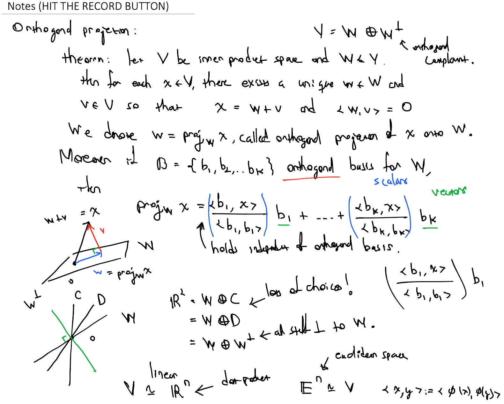
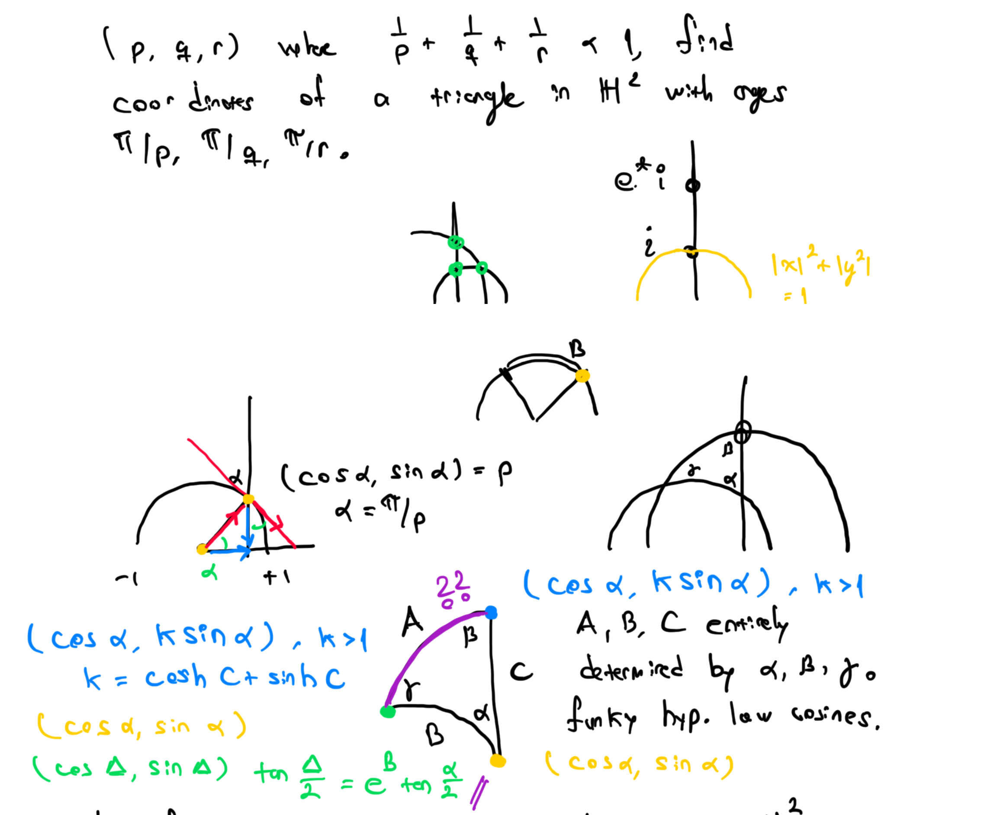

Teaching
Teaching is a huge part of being in the mathematical community. Either in a large lecture or a small seminar, we're always trying to share mathematics in some capacity. It's one of the many reasons I love mathematics so much! Here you'll find some syllabi and information about classes I taught in the past. Feel free to reach out if you want access to some resources I've made. Unless otherwise stated I was course chair for the classes below.
Currently and Previously Teaching (Brown University)
- Spring 2025: Math 1710 – Topology
- Fall 2024: Math 180 – Multivariable Calculus
- Fall 2024: Math 200 – Multivariable Calculus with Applications
- Spring 2024: Math 1820A – Introduction to Lie Algebras
- Fall 2023: Math 1410 – Topology
- Fall 2023: Math 0190 – Calculus II (supervised by Jordan Kostiuk )
- Spring 2023: Math 1540 – Topics in Algebra
- Fall 2022: Math 1410 – Topology
- Fall 2022: Math 520 – Linear Algebra (supervised by Jordan Kostiuk )
- Spring 2022: Math 1540 – Topics in Algebra
- Fall 2021: Math 0090 – Calculus I
Previously Teaching and Grading (University of Maryland)
- Spring 2021: Math 120 – Elementary Calculus I (Instructor)
- Fall 2020: Math 240 – Linear Algebra (Instructor)
- Spring 2020: Math 115 – Precalculus (Instructor)
- Fall 2019: Math 003 – Developmental Mathematics
- Summer 2019: Girls Talk Math – Surface Classification
- Spring 2019: Math 461 – Linear Algebra for Engineers (Instructor)
- Fall 2018: Math 410 – Advanced Calculus (Grader)
- Fall 2018: Math 431 – Geometry of Computer Graphics (Grader)
- Summer 2018: ICERM – Low-Dimensional Topology and Geometry
- Spring 2018: Math 113 – College Algebra and Trigonometry (Instructor)
- Fall 2017: Math 240 – Linear Algebra (Instructor)
- Summer 2017: Math 107 – Introduction to Math Modeling
- Spring 2017: Math 141 – Calculus II (Instructor)
- Fall 2016: Math 115 – Precalculus (Instructor)
- Summer 2016: Math 463 – Complex Analysis (Grader) [thank you to Steven Chadwick for finding this 10 years later!]
- Spring 2016: Math 463 – Complex Analysis (Grader)
- Fall 2015: Math 111 – Introduction to Probability

